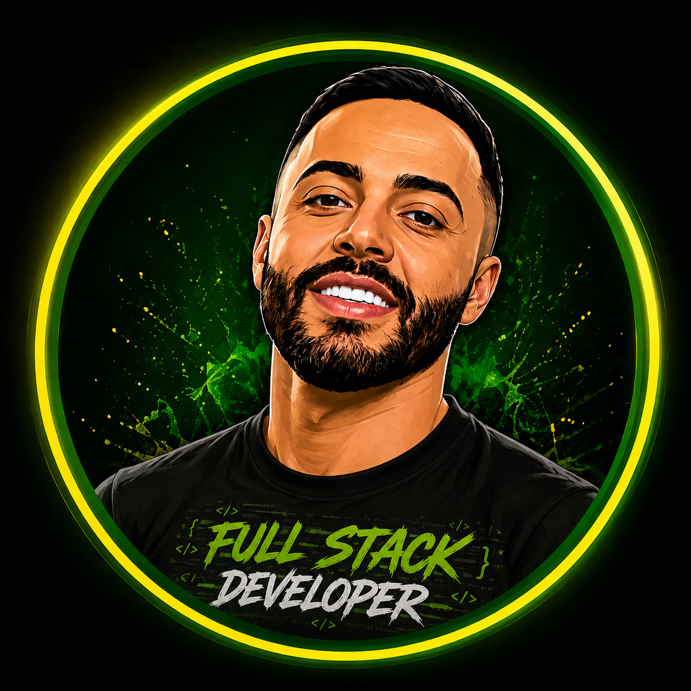

ESTUDOAprendizado contínuo
</>
ROMARIO DEV
FULL STACK DEVELOPER | QA ENGINEER
SEMPRE EM EVOLUÇÃO
PORTFÓLIO / QUALIDADE / DESENVOLVIMENTO
Olá, eu sou
Romario Gomes
Full Stack Developer & QA Engineer
Estudante de Análise e Desenvolvimento de Sistemas, apaixonado por tecnologia, qualidade de software e automação de testes. Atualmente atuo com QA e continuo evoluindo em desenvolvimento, APIs, banco de dados e construção de projetos reais.
01TESTARcom propósito
02AUTOMATIZARcom eficiência
03DESENVOLVERcom qualidade
04EVOLUIRsempre
QA / DEV
BUILDING
BUILDING

DISCIPLINA
FOCO
TESTES
RESULTADOS
FOCO
TESTES
RESULTADOS
BETTER
TESTS
A BRIGHTER
TOMORROW
TESTS
A BRIGHTER
TOMORROW
PROJETOSConstrução na prática
QUALIDADETestes e automação
EVOLUÇÃOSempre em movimento
◉ PERFIL
O que eu faço
Atuo com testes manuais e automação, validação de APIs, qualidade de software e desenvolvimento. Meu objetivo é aplicar conhecimento em projetos reais, identificar problemas e construir soluções com qualidade.
</> STACK
Tecnologias
JavaPythonJavaScriptHTML5
CSS3Spring BootMySQLDocker
GitGitHubPlaywrightPostman
▣ EVOLUÇÃO
Em estudo
- Playwright e automação de testes
- ADVPL / TLPP — TOTVS Protheus
- Boas práticas de desenvolvimento
- Arquitetura e integração de APIs
- Banco de dados e qualidade
- Novas tecnologias continuamente
▣ PROJETO EM DESTAQUE
PixFactory
Plataforma Web de Gestão de Clientes
PROJETO PRONTO / DEMO
Sistema completo com frontend, API, banco de dados e autenticação. Projeto pessoal criado para aplicar na prática desenvolvimento web, APIs, modelagem de dados, CRUD, autenticação e boas práticas.
▣ COMO EXECUTAR O SISTEMA REAL
Quer ver o PixFactory funcionando?
Esta página é a vitrine. O dashboard verdadeiro é executado localmente pelo repositório.
>_
CLONE
git clone https://github.com/Romarioarg/pixfactory.git ENTRE NA PASTA
cd pixfactoryDOCKER
docker compose up --buildNAVEGADOR
http://localhost:8080CONTA DEMO
demo@pixfactory.app
Demo@123
!
Importante: o dashboard, login e demais funcionalidades continuam no projeto original. Esta página apenas apresenta o projeto e direciona para o GitHub/README.
▣ SOBRE A JORNADA
Aprender. Construir. Testar. Evoluir.
Meu portfólio acompanha minha evolução como profissional de tecnologia: estudos, automação, desenvolvimento e projetos aplicados. Cada projeto é uma oportunidade de transformar conhecimento em prática.
“
Em constante evolução,
sempre buscando aprender
e construir um futuro melhor
com tecnologia.